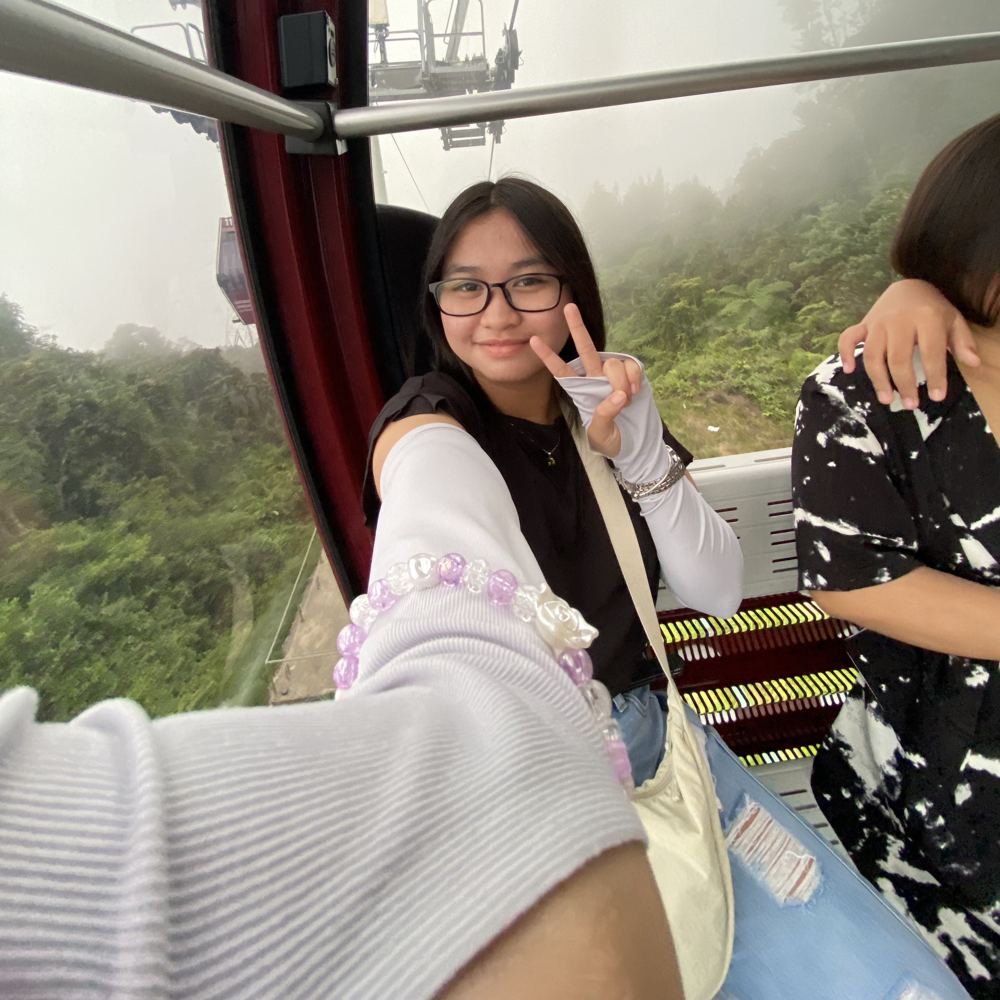

About the Researcher

Chloe Kaze Torres Peria
chloekaze.peria@smc.edu.ph || 09286041567
Elementary Graduate, Valedictorian
St. Thomas More Montessori School of Law and Bussiness Grade 9 Student
Science High School
Achievements:
First Honor 2016 - Mary Immaculate Child Development Academy
First Honor 2017 - Mary Immaculate Child Development Academy
First Honor 2018 - Mary Immaculate Child Development Academy
First Honor 2019 - St. Thomas More Montessori School of Law and Business
Montessori Learner of the Year 2020 - St. Thomas More Montessori School of Law and Business
Montessori Learner of the Year 2021 - St. Thomas More Montessori School of Law and Business
4th Place - 2018 Metrobank-MTAP-DepEd Math Challenge Division Finals
2nd Place - 2018 Division Mathematics Science Quest and Interactive Skills Competition Regional
7th Place - 2018 Division Mathematics Science Quest and Interactive Skills Competition National, Individual Category
1st Place - 2018 Division Mathematics Science Quest and Interactive Skills Competition National, Team Category
3rd Place - 2020 Metrobank-MTAP-DepEd Math Challenge Division Finals
2nd Place - 2020 Metrobank-MTAP-DepEd Math Challenge Division Elimination
2nd Place - 2020 Division Mathematics Science Quest and Interactive Skills Competition